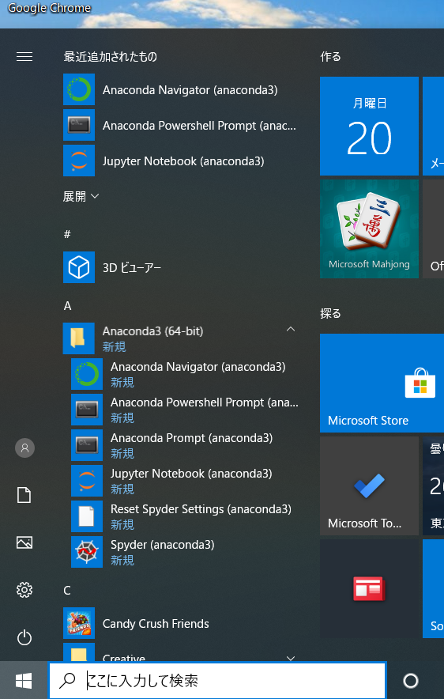
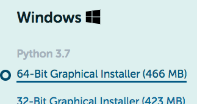
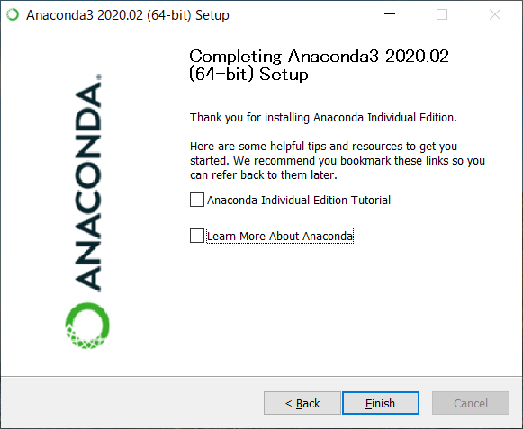
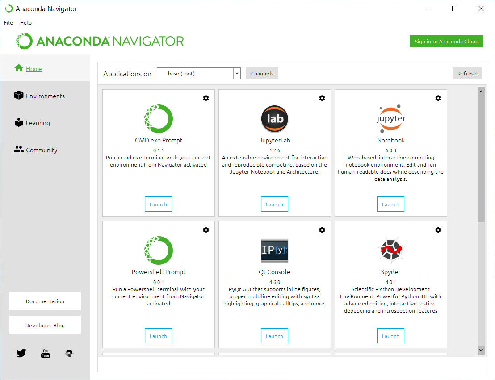
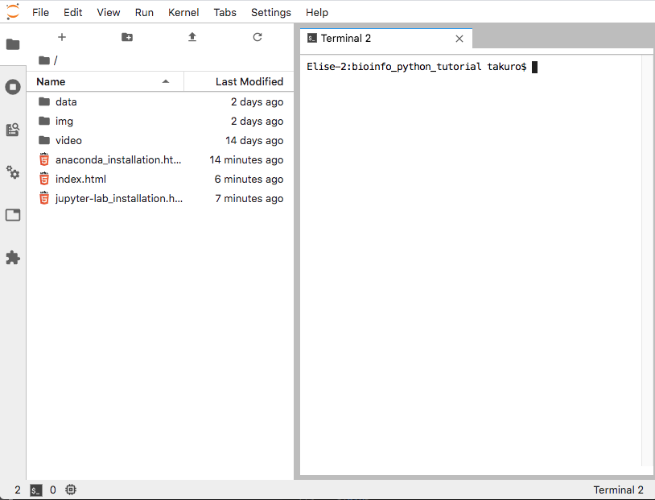

Jupyter-Labのインストール: Windows編
Jupyter-LabはGoogle Colaboratoryと同様の機能をもつPythonの開発環境です。
Jupyter-LabはAnacondaというPython関連ソフトのパッケージに含まれていますので、それを利用します。
[注意] AnacondaはHomebrew/Linuxbrewと相性が悪いので、Macでhomebrewを利用されている場合Anacondaの導入はお勧めしません。WSLで利用しているLinuxbrewはWindowsとは切り離されているので問題ありません。
🖥 インストール
-
Anacondaのダウンロードサイトを開きます。
- Windows64bit版のインストーラーを選択しダウンロードしてください。 （32bitマシンを使っている場合は32bit版、ポップアップは無視）
- ダウンロードされたインストーラーを実行します。
- 表示されるダイアログに従ってインストールを進めてください。
- Windowsのスタートメニューを開き、Anaconda3のフォルダを開きます。
- その中にあるAnaconda Navigatorを起動します。 
- Anaconda Navigatorの中のJupyterLabを
Launchボタンを押して起動します。
ウェブブラウザが立ち上がり、下記のようなアプリケーションが開かれれば問題なくインストールができています。


いくつか選択肢がありますが、全てデフォルトでOKです。
インストール後、最後のチェックボックスは外しておくのが無難かもしれません（下図）。 
Anaconda Navigatorを起動した状態です。
Anaconda NavigatorはAnacondaが管理するGUIソフトのハブのような役目を果たします。


確認できたら、
Jupyter-labのツールバー > File > Shut Down でJupyter-labを終了し、ウェブブラウザのタブを閉じてください。以上で準備終了です。